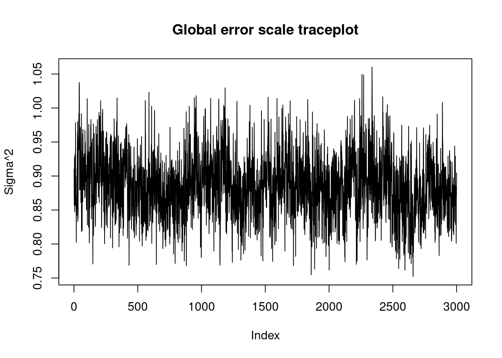
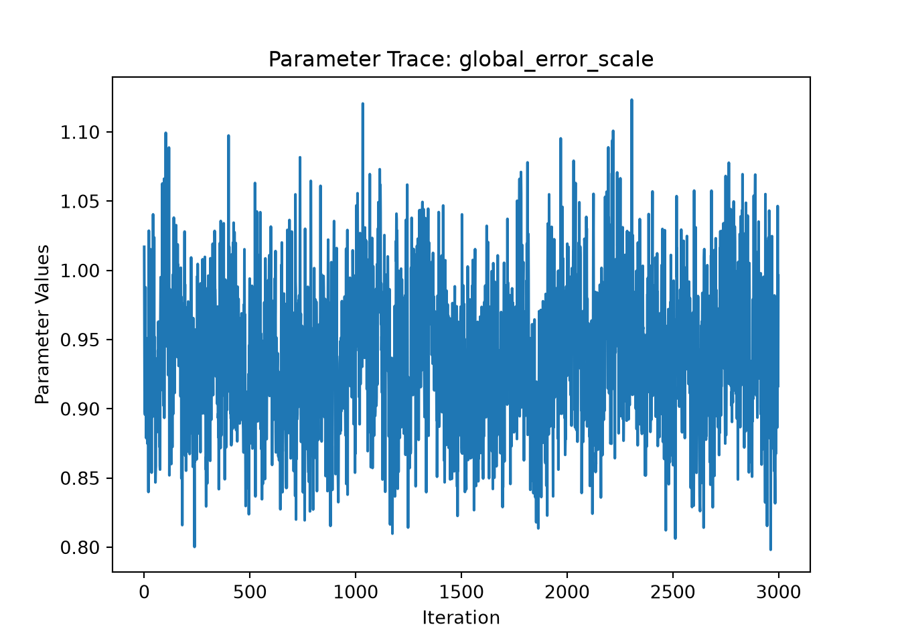
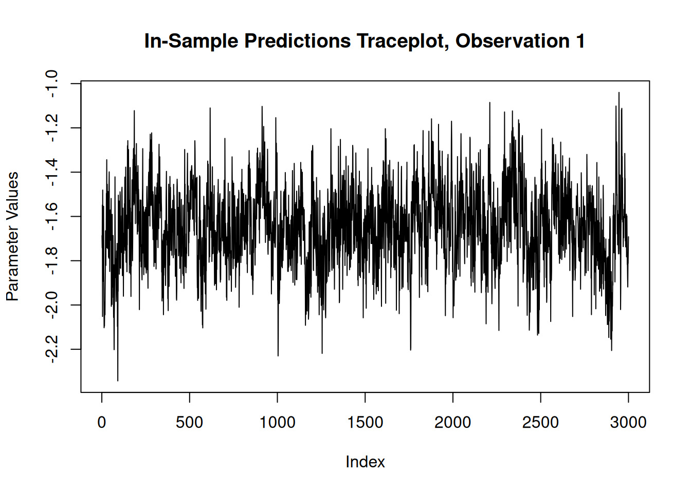
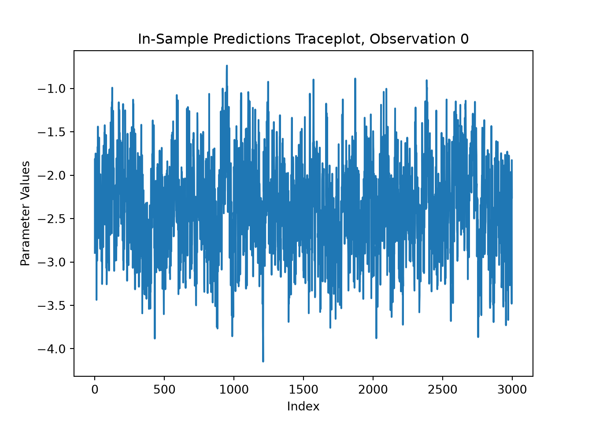
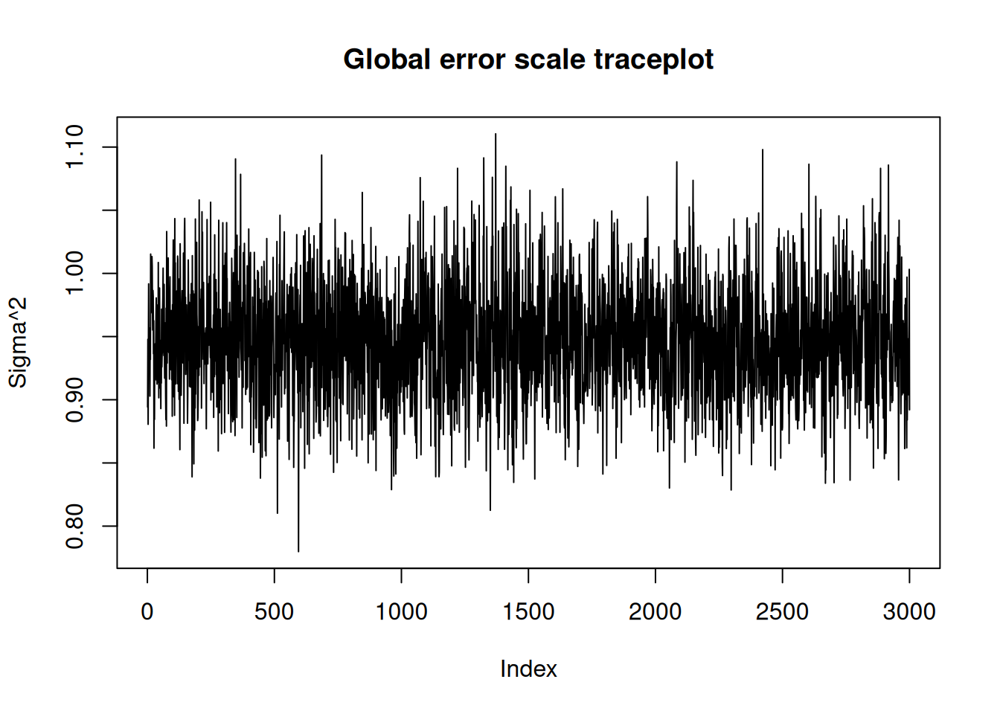
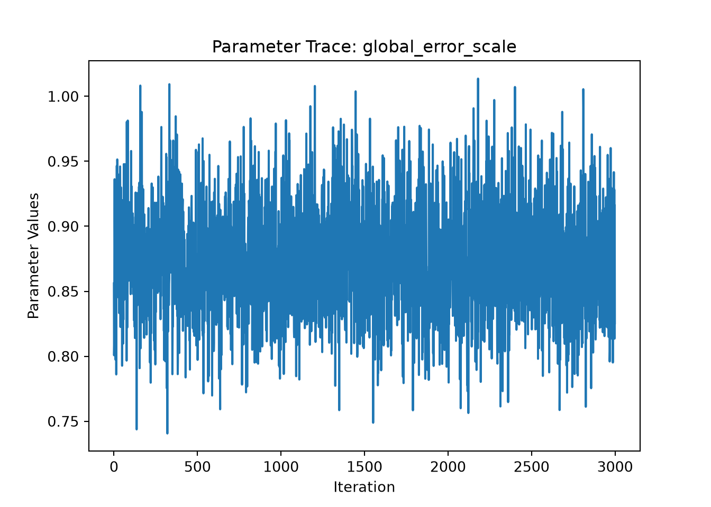
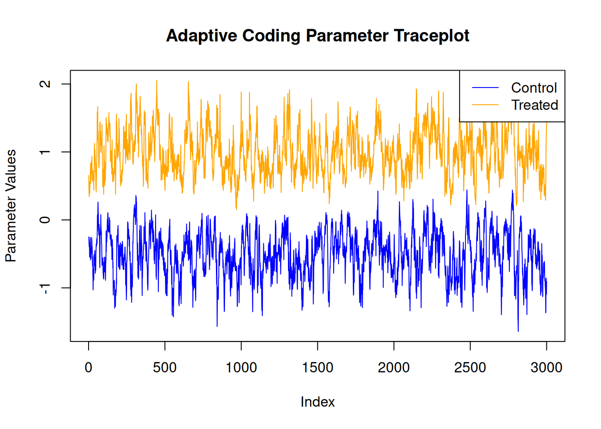
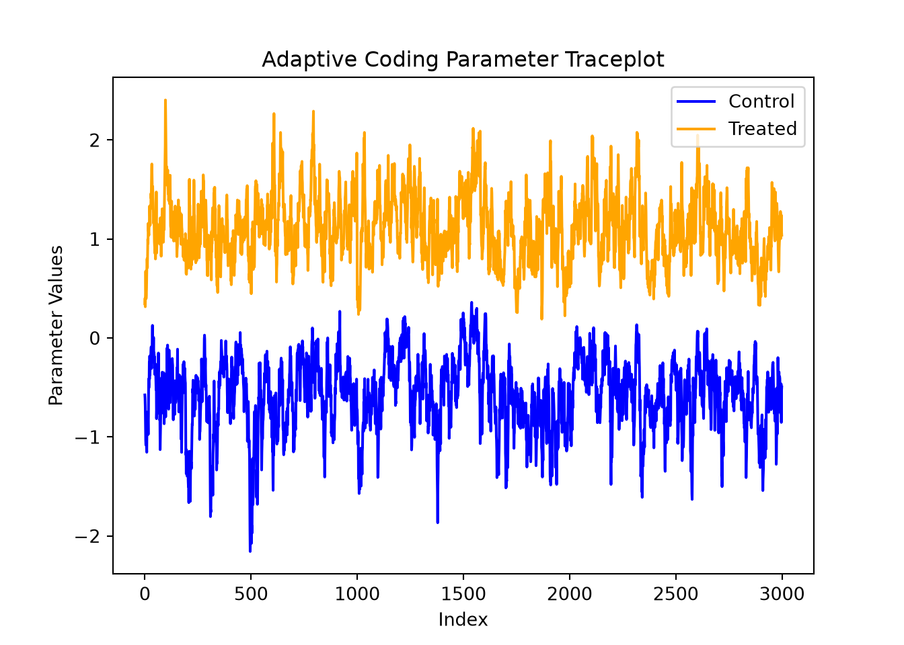

library(stochtree)Posterior Summary and Visualization Utilities
This vignette demonstrates the summary and plotting utilities available for stochtree models.
Setup
Load necessary packages
import numpy as np
import matplotlib.pyplot as plt
from stochtree import BARTModel, BCFModel, plot_parameter_traceSet a seed for reproducibility
random_seed = 1234
set.seed(random_seed)random_seed = 1234
rng = np.random.default_rng(random_seed)Supervised Learning
We begin with the supervised learning use case served by the bart() function.
Below we simulate a simple regression dataset.
n <- 1000
p_x <- 10
p_w <- 1
X <- matrix(runif(n * p_x), ncol = p_x)
W <- matrix(runif(n * p_w), ncol = p_w)
f_XW <- (((0 <= X[, 10]) & (0.25 > X[, 10])) *
(-7.5 * W[, 1]) +
((0.25 <= X[, 10]) & (0.5 > X[, 10])) * (-2.5 * W[, 1]) +
((0.5 <= X[, 10]) & (0.75 > X[, 10])) * (2.5 * W[, 1]) +
((0.75 <= X[, 10]) & (1 > X[, 10])) * (7.5 * W[, 1]))
noise_sd <- 1
y <- f_XW + rnorm(n, 0, 1) * noise_sdn = 1000
p_x = 10
p_w = 1
X = rng.uniform(size=(n, p_x))
W = rng.uniform(size=(n, p_w))
# R uses X[,10] (1-indexed) = Python X[:,9]
f_XW = (
((X[:, 9] >= 0) & (X[:, 9] < 0.25)) * (-7.5 * W[:, 0]) +
((X[:, 9] >= 0.25) & (X[:, 9] < 0.5)) * (-2.5 * W[:, 0]) +
((X[:, 9] >= 0.5) & (X[:, 9] < 0.75)) * ( 2.5 * W[:, 0]) +
((X[:, 9] >= 0.75) & (X[:, 9] < 1.0)) * ( 7.5 * W[:, 0])
)
noise_sd = 1.0
y = f_XW + rng.standard_normal(n) * noise_sdNow we fit a simple BART model to the data.
num_gfr <- 10
num_burnin <- 0
num_mcmc <- 1000
general_params <- list(
num_threads = 1,
num_chains = 3
)
bart_model <- stochtree::bart(
X_train = X,
y_train = y,
leaf_basis_train = W,
num_gfr = num_gfr,
num_burnin = num_burnin,
num_mcmc = num_mcmc,
general_params = general_params
)bart_model = BARTModel()
bart_model.sample(
X_train=X,
y_train=y,
leaf_basis_train=W,
num_gfr=10,
num_burnin=0,
num_mcmc=1000,
general_params={
"num_threads": 1,
"num_chains": 3
},
)We obtain a high level summary of the BART model by running print().
print(bart_model)stochtree::bart() run with mean forest, global error variance model, and mean forest leaf scale model
Continuous outcome was modeled as Gaussian with a leaf regression prior with 1 bases for the mean forest
Outcome was standardized
The sampler was run for 10 GFR iterations, with 3 chains of 0 burn-in iterations and 1000 MCMC iterations, retaining every iteration (i.e. no thinning) print(bart_model)BARTModel run with mean forest, global error variance model, and mean forest leaf scale model
Outcome was modeled as gaussian with a leaf regression prior with 1 bases for the mean forest
Outcome was standardized
The sampler was run for 10 GFR iterations, with 3 chains of 0 burn-in iterations and 1000 MCMC iterations, retaining every iteration (i.e. no thinning)For a more detailed summary (including the information above), we use the summary() function.
summary(bart_model)stochtree::bart() run with mean forest, global error variance model, and mean forest leaf scale model
Continuous outcome was modeled as Gaussian with a leaf regression prior with 1 bases for the mean forest
Outcome was standardized
The sampler was run for 10 GFR iterations, with 3 chains of 0 burn-in iterations and 1000 MCMC iterations, retaining every iteration (i.e. no thinning)
Summary of sigma^2 posterior:
3000 samples, mean = 0.886, standard deviation = 0.046, quantiles:
2.5% 10% 25% 50% 75% 90% 97.5%
0.7994350 0.8271901 0.8547760 0.8847012 0.9161266 0.9454730 0.9822443
Summary of leaf scale posterior:
3000 samples, mean = 0.007, standard deviation = 0.001, quantiles:
2.5% 10% 25% 50% 75% 90%
0.005276913 0.005760098 0.006291440 0.006992523 0.008029216 0.009153001
97.5%
0.010363291
Summary of in-sample posterior mean predictions:
1000 observations, mean = -0.064, standard deviation = 3.286, quantiles:
2.5% 10% 25% 50% 75% 90% 97.5%
-6.8426716 -4.9644279 -1.8376367 -0.1223476 2.0146393 4.3052531 6.5446436 print(bart_model.summary())BART Model Summary:
-------------------
BARTModel run with mean forest, global error variance model, and mean forest leaf scale model
Outcome was modeled as gaussian with a leaf regression prior with 1 bases for the mean forest
Outcome was standardized
The sampler was run for 10 GFR iterations, with 3 chains of 0 burn-in iterations and 1000 MCMC iterations, retaining every iteration (i.e. no thinning)
Summary of sigma^2 posterior: 3000 samples, mean = 0.938, standard deviation = 0.050, quantiles:
2.5%: 0.846
10.0%: 0.875
25.0%: 0.903
50.0%: 0.937
75.0%: 0.971
90.0%: 1.003
97.5%: 1.040
Summary of leaf scale posterior: 3000 samples, mean = 0.007, standard deviation = 0.001, quantiles:
2.5%: 0.005
10.0%: 0.006
25.0%: 0.006
50.0%: 0.007
75.0%: 0.008
90.0%: 0.009
97.5%: 0.010
Summary of in-sample posterior mean predictions:
1000 observations, mean = 0.105, standard deviation = 3.287, quantiles:
2.5%: -6.724
10.0%: -4.335
25.0%: -1.913
50.0%: 0.169
75.0%: 2.104
90.0%: 4.409
97.5%: 6.614
NoneWe can use the plot() function to produce a traceplot of model terms like the global error scale \(\sigma^2\) or (if \(\sigma^2\) is not sampled) the first observation of cached train set predictions.
plot(bart_model)
ax = plot_parameter_trace(bart_model, term="global_error_scale")
plt.show()
For finer-grained control over which parameters to plot, we can also use the extractParameter() function to pull the posterior distribution of any valid model term (e.g., global error scale \(\sigma^2\), leaf scale \(\sigma^2_{\ell}\), in-sample mean function predictions y_hat_train) and then plot any subset or transformation of these values.
y_hat_train_samples <- extractParameter(bart_model, "y_hat_train")
obs_index <- 1
plot(
y_hat_train_samples[obs_index, ],
type = "l",
main = paste0("In-Sample Predictions Traceplot, Observation ", obs_index),
xlab = "Index",
ylab = "Parameter Values"
)
y_hat_train_samples = bart_model.extract_parameter("y_hat_train")
obs_index = 0
fig, ax = plt.subplots()
ax.plot(y_hat_train_samples[obs_index, :])
ax.set_title(f"In-Sample Predictions Traceplot, Observation {obs_index}")
ax.set_xlabel("Index")
ax.set_ylabel("Parameter Values")
plt.show()
Causal Inference
We now run the same demo for the causal inference use case served by the bcf() function in R and the BCFModel Python class.
Below we simulate a simple dataset for a causal inference problem with binary treatment and continuous outcome.
# Generate covariates and treatment
n <- 1000
p_X = 5
X = matrix(runif(n * p_X), ncol = p_X)
pi_X = 0.25 + 0.5 * X[, 1]
Z = rbinom(n, 1, pi_X)
# Define the outcome mean functions (prognostic and treatment effects)
mu_X = pi_X * 5 + 2 * X[, 3]
tau_X = X[, 2] * 2 - 1
# Generate outcome
epsilon = rnorm(n, 0, 1)
y = mu_X + tau_X * Z + epsilon# Generate covariates and treatment
n = 1000
p_X = 5
X = rng.uniform(size=(n, p_X))
pi_X = 0.25 + 0.5 * X[:, 0]
Z = rng.binomial(1, pi_X, n).astype(float)
# Define the outcome mean functions (prognostic and treatment effects)
mu_X = pi_X * 5 + 2 * X[:, 2]
tau_X = X[:, 1] * 2 - 1
# Generate outcome
epsilon = rng.standard_normal(n)
y = mu_X + tau_X * Z + epsilonNow we fit a simple BCF model to the data
num_gfr <- 10
num_burnin <- 0
num_mcmc <- 1000
general_params <- list(
num_threads = 1,
num_chains = 3,
adaptive_coding = TRUE
)
bcf_model <- stochtree::bcf(
X_train = X,
y_train = y,
Z_train = Z,
num_gfr = num_gfr,
num_burnin = num_burnin,
num_mcmc = num_mcmc,
general_params = general_params
)bcf_model = BCFModel()
bcf_model.sample(
X_train=X,
Z_train=Z,
y_train=y,
propensity_train=pi_X,
num_gfr=10,
num_burnin=0,
num_mcmc=1000,
general_params={
"num_threads": 1,
"num_chains": 3,
"adaptive_coding": True
},
)We obtain a high level summary of the BCF model by running print().
print(bcf_model)stochtree::bcf() run with prognostic forest, treatment effect forest, global error variance model, prognostic forest leaf scale model, and treatment effect intercept model
Outcome was modeled as gaussian
Treatment was binary and its effect was estimated with adaptive coding
outcome was standardized
An internal propensity model was fit using stochtree::bart() in lieu of user-provided propensity scores
The sampler was run for 10 GFR iterations, with 3 chains of 0 burn-in iterations and 1000 MCMC iterations, retaining every iteration (i.e. no thinning) print(bcf_model)BCFModel run with prognostic forest, treatment effect forest, global error variance model, prognostic forest leaf scale model, and treatment effect intercept model
Outcome was modeled as gaussian
Treatment was binary and its effect was estimated with adaptive coding
Outcome was standardized
User-provided propensity scores were included in the model
The sampler was run for 10 GFR iterations, with 3 chains of 0 burn-in iterations and 1000 MCMC iterations, retaining every iteration (i.e. no thinning)For a more detailed summary (including the information above), we use the summary() function / method.
summary(bcf_model)stochtree::bcf() run with prognostic forest, treatment effect forest, global error variance model, prognostic forest leaf scale model, and treatment effect intercept model
Outcome was modeled as gaussian
Treatment was binary and its effect was estimated with adaptive coding
outcome was standardized
An internal propensity model was fit using stochtree::bart() in lieu of user-provided propensity scores
The sampler was run for 10 GFR iterations, with 3 chains of 0 burn-in iterations and 1000 MCMC iterations, retaining every iteration (i.e. no thinning)
Summary of sigma^2 posterior:
3000 samples, mean = 0.946, standard deviation = 0.045, quantiles:
2.5% 10% 25% 50% 75% 90% 97.5%
0.8613856 0.8910109 0.9153463 0.9449539 0.9752885 1.0035574 1.0394833
Summary of prognostic forest leaf scale posterior:
3000 samples, mean = 0.002, standard deviation = 0.000, quantiles:
2.5% 10% 25% 50% 75% 90%
0.001113565 0.001258146 0.001409657 0.001624647 0.001869013 0.002084681
97.5%
0.002361389
Summary of adaptive coding parameters:
3000 samples, mean (control) = -0.506, mean (treated) = 0.996, standard deviation (control) = 0.332, standard deviation (treated) = 0.334
quantiles (control):
2.5% 10% 25% 50% 75% 90%
-1.15477237 -0.95684742 -0.72996899 -0.49792353 -0.25973526 -0.07910654
97.5%
0.09140222
quantiles (treated):
2.5% 10% 25% 50% 75% 90% 97.5%
0.4139386 0.5877489 0.7433859 0.9706844 1.2227012 1.4486802 1.6742741
Summary of treatment effect intercept (tau_0) posterior:
3000 samples, mean = 0.111, standard deviation = 0.749, quantiles:
2.5% 10% 25% 50% 75% 90%
-1.56840341 -0.95878494 -0.26657951 0.09064829 0.74784777 0.99747365
97.5%
1.28460636
Summary of in-sample posterior mean predictions:
1000 observations, mean = 3.487, standard deviation = 0.945, quantiles:
2.5% 10% 25% 50% 75% 90% 97.5%
1.687090 2.267267 2.801211 3.482839 4.115718 4.739740 5.423538
Summary of in-sample posterior mean CATEs:
1000 observations, mean = 0.085, standard deviation = 0.524, quantiles:
2.5% 10% 25% 50% 75%
-0.7284301413 -0.5518672581 -0.3776387958 0.0001783472 0.5909589505
90% 97.5%
0.8051812603 0.9372831929 print(bcf_model.summary())BCF Model Summary:
------------------
BCFModel run with prognostic forest, treatment effect forest, global error variance model, prognostic forest leaf scale model, and treatment effect intercept model
Outcome was modeled as gaussian
Treatment was binary and its effect was estimated with adaptive coding
Outcome was standardized
User-provided propensity scores were included in the model
The sampler was run for 10 GFR iterations, with 3 chains of 0 burn-in iterations and 1000 MCMC iterations, retaining every iteration (i.e. no thinning)
Summary of sigma^2 posterior: 3000 samples, mean = 0.874, standard deviation = 0.042, quantiles:
2.5%: 0.794
10.0%: 0.822
25.0%: 0.844
50.0%: 0.872
75.0%: 0.901
90.0%: 0.928
97.5%: 0.960
Summary of prognostic forest leaf scale posterior: 3000 samples, mean = 0.002, standard deviation = 0.000, quantiles:
2.5%: 0.001
10.0%: 0.001
25.0%: 0.001
50.0%: 0.002
75.0%: 0.002
90.0%: 0.002
97.5%: 0.002
Summary of adaptive coding parameters:
3000 samples, mean (control) = -0.574, mean (treated) = 1.109, standard deviation (control) = 0.365, standard deviation (treated) = 0.334
quantiles (control):
2.5%: -1.394
10.0%: -1.051
25.0%: -0.798
50.0%: -0.540
75.0%: -0.326
90.0%: -0.138
97.5%: 0.059
quantiles (treated):
2.5%: 0.507
10.0%: 0.695
25.0%: 0.881
50.0%: 1.080
75.0%: 1.326
90.0%: 1.557
97.5%: 1.822
Summary of treatment effect intercept (tau_0) posterior: 3000 samples, mean = -0.026, standard deviation = 0.638, quantiles:
2.5%: -1.009
10.0%: -0.715
25.0%: -0.457
50.0%: -0.200
75.0%: 0.310
90.0%: 0.912
97.5%: 1.586
Summary of in-sample posterior mean predictions:
1000 observations, mean = 3.482, standard deviation = 0.959, quantiles:
2.5%: 1.850
10.0%: 2.211
25.0%: 2.785
50.0%: 3.474
75.0%: 4.159
90.0%: 4.756
97.5%: 5.328
Summary of in-sample posterior mean CATEs:
1000 observations, mean = -0.029, standard deviation = 0.624, quantiles:
2.5%: -1.072
10.0%: -0.920
25.0%: -0.575
50.0%: 0.065
75.0%: 0.537
90.0%: 0.737
97.5%: 0.910
NoneIn R, we have a plot() that produces a traceplot of model terms like the global error scale \(\sigma^2\) or (if \(\sigma^2\) is not sampled) the first observation of cached train set predictions.
In Python, we provide a plot_parameter_trace() function for requesting a traceplot of a specific model parameter.
plot(bcf_model)
ax = plot_parameter_trace(bcf_model, term="global_error_scale")
plt.show()
For finer-grained control over which parameters to plot, we can also use the extractParameter() function in R or the extract_parameter() method in Python to query the posterior distribution of any valid model term (e.g., global error scale \(\sigma^2\), prognostic forest leaf scale \(\sigma^2_{\mu}\), CATE forest leaf scale \(\sigma^2_{\tau}\), adaptive coding parameters \(b_0\) and \(b_1\) for binary treatment, in-sample mean function predictions y_hat_train, in-sample CATE function predictions tau_hat_train) and then plot any subset or transformation of these values.
adaptive_coding_samples <- extractParameter(bcf_model, "adaptive_coding")
plot(
adaptive_coding_samples[1, ],
type = "l",
main = "Adaptive Coding Parameter Traceplot",
xlab = "Index",
ylab = "Parameter Values",
ylim = range(adaptive_coding_samples),
col = "blue"
)
lines(adaptive_coding_samples[2, ], col = "orange")
legend(
"topright",
legend = c("Control", "Treated"),
lty = 1,
col = c("blue", "orange")
)
adaptive_coding_samples = bcf_model.extract_parameter("adaptive_coding")
fig, ax = plt.subplots()
ax.plot(adaptive_coding_samples[0, :], color="blue", label="Control")
ax.plot(adaptive_coding_samples[1, :], color="orange", label="Treated")
ax.set_title("Adaptive Coding Parameter Traceplot")
ax.set_xlabel("Index")
ax.set_ylabel("Parameter Values")
ax.legend(loc="upper right")
plt.show()